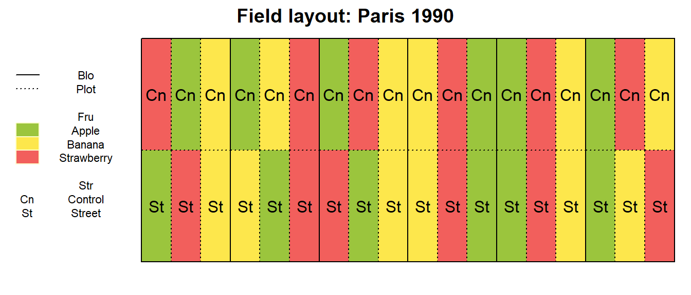
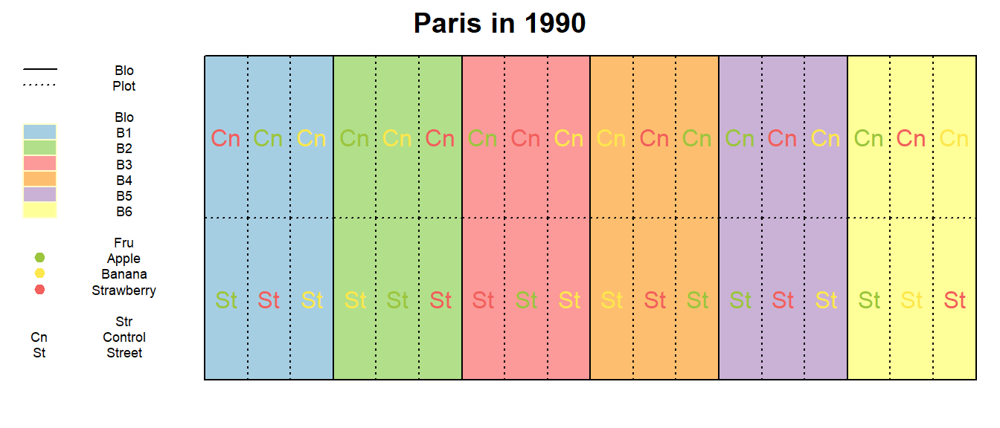
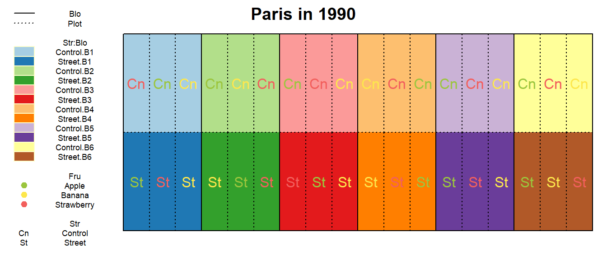
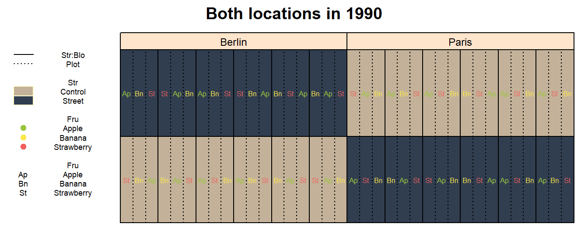
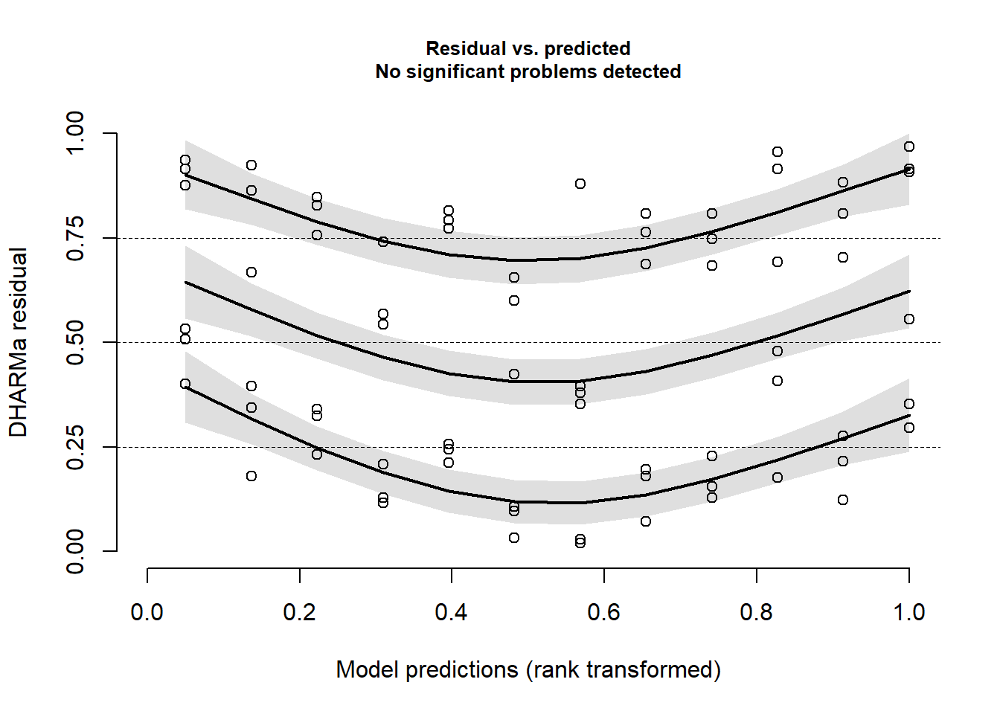
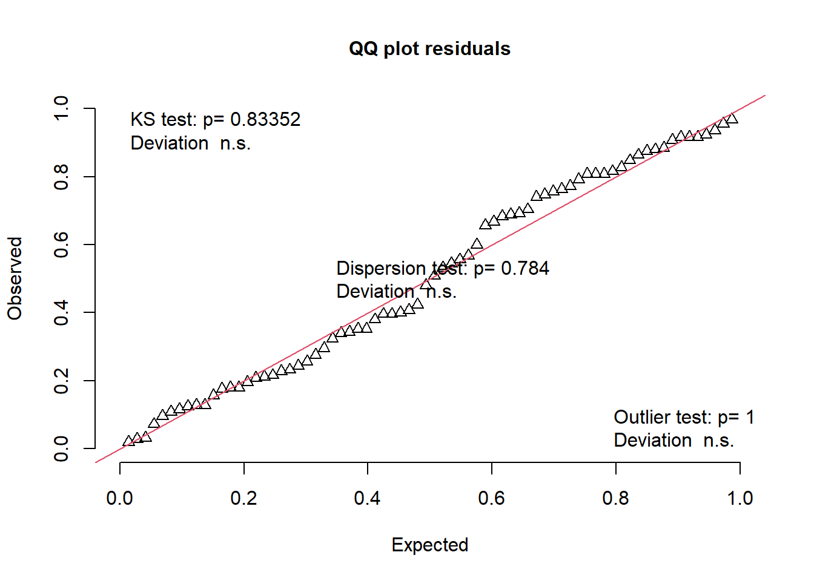

A peculiar split-plot design
This is an example with an experimental design that may seem unproblematic at first glance, but is actually a not-so-standard experimental design. During consulting, I have come across multiple poeple who had versions of this “issue”. As a result, this chapter focusses a lot more on the experimental design discussion.
# packages
pacman::p_load(conflicted, # handle conflicting functions
tidyverse, # data import and handling
glmmTMB, # linear mixed model
broom.mixed, car, DHARMa, # linear mixed model evaluation
emmeans, modelbased, # mean comparisons
desplot, scales, see) # plots
# function conflicts
conflict_prefer("select", "dplyr", quiet = TRUE) # set select() from dplyr as default
conflict_prefer("filter", "dplyr", quiet = TRUE) # set filter() from dplyr as defaultData
This example considers a ficticious series of yield trials. There are 2 treatment factors:
Strwith levelsControlandStreetandFruwith levelsApple,BananaandStrawberry.
The trials were conducted
- at 2 locations (
Locwith levelsBerlinandParis). Moreover, the these trials were repeated - across 2 years (
Yeawith levels1989and1990).
Thus, there are 2 trials with repeated measures across 2 years, respectively. Similar experimental designs (with different randomizations) were used at each location and in each year.
# data (import via URL)
dataURL <- "https://raw.githubusercontent.com/SchmidtPaul/DSFAIR/master/data/StreetFruit.csv"
dat <- read_csv(dataURL)
dat## # A tibble: 144 x 9
## Yea Loc Str Fru Blo Yie row col Plot
## <dbl> <chr> <chr> <chr> <chr> <dbl> <dbl> <dbl> <chr>
## 1 1989 Berlin Control Apple B1 47.9 1 1 B1
## 2 1989 Berlin Control Strawberry B1 45.3 1 2 B2
## 3 1989 Berlin Control Banana B1 44.7 1 3 B3
## 4 1989 Berlin Control Strawberry B2 45.6 1 4 B4
## 5 1989 Berlin Control Apple B2 47.3 1 5 B5
## 6 1989 Berlin Control Banana B2 45.0 1 6 B6
## 7 1989 Berlin Control Banana B3 44.5 1 7 B7
## 8 1989 Berlin Control Apple B3 47.2 1 8 B8
## 9 1989 Berlin Control Strawberry B3 45.8 1 9 B9
## 10 1989 Berlin Control Strawberry B4 47.1 1 10 B10
## # ... with 134 more rowsFormatting
Before anything, the columns Yea, Loc, Str, Fru, Blo and Plot should be encoded as factors, since R by default encoded them as character.
dat <- dat %>%
mutate_at(vars(Yea:Blo, Plot), as.factor)Preparations
In this example we will put some extra effort into the created outputs (graphs and tables). Therefore, we now set up some things before we continue.
# Colors for Fru levels
Fru_color <- c(Apple = "#9bc53d",
Banana = "#fde74c",
Strawberry = "#f25f5c")
# Colors for Str levels
Str_color <- c(Control = "#C3B299",
Street = "#313E50")Exploring
In order to obtain a field layout of the trial, we can use the desplot() function. Notice that for this we need two data columns that identify the row and col of each plot in the trial. Moreover, we need to use a subset of the data, since we have 2 trials with repeated measurements per plot, respectively.
Yea_i <- "1990"
Loc_j <- "Paris"
dat %>%
filter(Yea == Yea_i & Loc == Loc_j) %>%
desplot(data = .,
form = Fru ~ col + row, # fill color per Fru
col.regions = Fru_color, # use predefined colors
text = Str, cex = 1, shorten = "abb", # show genotype names per plot
out1 = Blo, out1.gpar = list(col = "black", lty = 1), # lines between blocks
out2 = Plot, out2.gpar = list(col = "black", lty = 3), # lines betwen plots
main = paste("Field layout:", Loc_j, Yea_i), # dynamic title
show.key = TRUE, key.cex = 0.7) # formatting
After playing around with Yea_i and Loc_j we can see how all trials are designed similarly and have different randomizations. However, what is peculiar about this trial design is that all plots that received the Street (or Control) treatment appear side-by-side in the same row. Moreover, it remains the same row across the two years. Note that per location the trials were laid out on exactly the same plots across the two years. Thus, the same 18 plots received the same Street (or Control) treatment in both years in Berlin and Paris, respectively.
This experimental design…
Why is it?
The goal of this trial was to find out if crops grown on soil where recently a street had been removed would perform differently compared to those grown on “normal” agricultural soil. Thus, multiple crops were chosen and aimed to grown on the two soil types under investigation.
The reason for this layout lies in the nature of the Str treatment. These trials were laid out on agricultural fields where there used to be a street that was removed and turned into agricultural field again. Therefore, the plots with the Street treatment could obviously not be randomized.
What is it?
Notice that there apparently are 6 blocks (Blo) and they are actually complete blocks, too, because all 6 factor level combinations appear in each one. However, this is not a randomized complete block design because of the restricted limitation of the Str treatment radnomization (inside each block).
dat %>%
filter(Yea == Yea_i & Loc == Loc_j) %>%
desplot(data = .,
form = Blo ~ col + row,
col.regions = RColorBrewer::brewer.pal(12, "Paired")[c(1,3,5,7,9,11)],
text = Str, cex = 1, shorten = "abb",
col = Fru, col.text = Fru_color,
out1 = Blo, out1.gpar = list(col = "black", lty = 1),
out2 = Plot, out2.gpar = list(col = "black", lty = 3),
show.key = TRUE, key.cex = 0.55,
main = paste(Loc_j, "in", Yea_i))
Ok, so our next guess could be that this is a split-plot design. We could argue that in split-plot designs, one of the treatment factors is harder to randomize than the other(s) and therefore grouped together in main plots. This does indeed seem to fit the setting here: In each of the 6 blocks, we have two main plots - one for each Str level and inside these 12 main plots we have three subplots respectively - one for each Fru level. So far, so good. What should also be done in a split-plot design is that first the main plots should be randomized and second the subplots within each main plot should be randomized. Again, the first step here did not occur. No randomization took place for the Str main plots, because it was simply not possible.
dat %>%
filter(Yea == Yea_i & Loc == Loc_j) %>%
mutate(`Str:Blo` = interaction(Str, Blo)) %>%
desplot(data = .,
form = `Str:Blo` ~ col + row,
col.regions = RColorBrewer::brewer.pal(12, "Paired"),
text = Str, cex = 1, shorten = "abb",
col = Fru, col.text = Fru_color,
out1 = Blo, out1.gpar = list(col = "black", lty = 1),
out2 = Plot, out2.gpar = list(col = "black", lty = 3),
show.key = TRUE, key.cex = 0.55,
main = paste(Loc_j, "in", Yea_i))
So is this a split-plot design with a certain lack of randomization? Can we simply acknowledge this minor inconvenience and go ahead with a model for a split-plot design at a single location with subplots nested inside mainplots nested inside 6 complete replicates in order to test both treatment main effects Str and Fru and compare their levels?
Strictly speaking: No, we should not!
The crucial and unfortunate detail here is that we do not really have true replicates for the Str treatment levels. Instead, we have a single large area/plot with Street and second one with Control. To make this as clear as possible, we could ignore the Fru factor for now, look at the trial layout via the following desplot and ask ourselves: How is this different from having just 2 large plots where 18 measurements per plot from 2 large plots were taken?
dat %>%
filter(Yea == Yea_i & Loc == Loc_j) %>%
desplot(data = .,
form = Str ~ col + row,
col.regions = Str_color,
out1 = Plot, out1.gpar = list(col = "black", lty = 3),
show.key = TRUE, key.cex = 0.55,
main = paste(Loc_j, "in", Yea_i))The answer is: There is no difference. As a result of the nature of the Str treatment, its levels could not be randomized at all and we really only have 1 former street whose effect on the yield performance of our fruits could be investigated. Measuring this effect at different positions does not change the fact, that it was still the exact same street. Therefore, there is no true replicate of Street (or Control) at this trial. Regarding the Str factor, the number of true/independent replicates is 1 and when ignoring the second treatment factor Fru, the number of pseudo-replicates (i.e. replicated measurements on the same unit) is 18. In other words, we do have a sort of split-plot design, but it only has a single replicate and a total of 2 main plots.
What does this mean for the analysis?
Having established that this is not a “standard split-plot” in the sense that we cannot conduct the same statistical analysis as in the previous GomezGomez1984 split-plot example, we should clarify what we can and cannot do to analyze this data properly.
What we can do is a descriptive statistical analysis i.e. calculate arithmetic means, standard deviations etc. and plot these values and/or the raw data. In other words: We can take analogous steps to those in the Exploring section of the GomezGomez1984 example (but note that the interpretation of these results should ultimately also be put in context of the limitations described below).
What we cannot do is to apply the same model and/or tests (i.e. statistical inference) as in the Modelling section of the GomezGomez1984 example. This is because in that example we did have a trial with multiple independent replicates for both our treatments, whereas here we do not.
Thus, we will take a step-by-step approach to investigate our options in terms of modelling the data.
A single location (1 year)
First, let us keep the focus on a single location in a single year - just like all the desplot graphs from above. Generally, one cannot make statistical inferences if only a single replicate is present.
Yet, we only have a single replicate for our 2 Str levels (Street and Control). Again: Yes, we have multiple measurements for both of them, but these are not true (i.e. independent) replicates, but pseudo-replicates just like in the subsampling Piepho1997 example. As a consequence, we must not set up a model with a Str main effect, which means that we can neither test its significance in an ANOVA, nor can we compare its adjusted means.
We do, however, have multiple true replicates for the Fru treatment levels - that is within the 2 Str levels. In other words, we have 6 replicates per fruit in the Street row and the Control, respectively. Accordingly, per fruit we have a total of 12 replicates (arranged in blocks) split up evenly between the two rows. This in turn would mean, that we could set up a model with a Fru main effect, which can be tested in an ANOVA and its adjusted means compared.
Accordingly, we would get the following model:
glmmTMB(
Yie ~ Fru + Str:Fru + Str:Blo,
REML = TRUE,
data = dat %>% filter(Yea == Yea_i & Loc == Loc_j)
)So our two treatment effects are affected differently, which makes sense as only the randomization for the Str treatment was limited. Unfortunately, we are actually much more interested in the Str treatment than we are in the Fru treatment: Nobody really wants to compare apple yields to banana yields (on Street plots and then again on Control plots). What we do want to compare is whether apple/banana/strawberry yields are different on Street plots than they are on Control plots.
Further notice that the model is similar to a model for one-factorial rcbd trials at two multiple locations if you replace Str with Trial. We would in a way treat the two rows as two separate trials. The difference is, however, that we also assume a Str:Fru interactione effect, which we would usually not do for design effects. Ultimately, this is beceause Str is neither just the effect of the street, nor just the effect of the row, but the Str effects and row effects are completely confounded.
In conclusion, analyzing a single location will not allow us to make the statistical inferences we want on our main treatment effect Str.
Both locations (1 year)
At this point it becomes clear our problem is mainly the lack of true replicates for Str. However, we actually do have an additional replicate for Str - it is simply not on the same location!
dat %>%
filter(Yea == Yea_i) %>%
mutate(`Str:Blo` = interaction(Str, Blo)) %>%
desplot(data = .,
form = Str ~ col + row|Loc,
col.regions = Str_color,
text = Fru, cex = 0.5, shorten = "abb",
col = Fru, col.text = Fru_color,
out1 = `Str:Blo`, out1.gpar = list(col = "black", lty = 1),
out2 = Plot, out2.gpar = list(col = "black", lty = 3),
show.key = TRUE, key.cex = 0.55,
main = paste("Both locations in", Yea_i))
This is the game changer here. While everything that was said is indeed true for a single location, jointly modelling data from more than one location finally allows us to make desired statistical inferences about Str. Looking at the desplot above, it can be seen how we can take a step back and view the location as a true replicate, because the Street plots in Berlin are independent of those in Paris. Thus, we have 2 complete and true replicates for Street and Control, respectively. It is still true that those 4 rows (i.e. Loc:Str combinations) are grouped together and only within each one we have 6 true replicates for Fru arranged as blocks. Therefore, as design effects we have plots nested in blocks nested in rows nested in locations.
In order to avoid confusion in this complex model, we should create an additional factor variable in the dataset that denotes a trial’s row, so that we do not actually write Loc:Str in the model. Furthermore, and albeit not strictly being necessary, we could reformat the block levels correctly:
dat <- dat %>%
mutate(Row = as.factor(row)) %>%
mutate(Blo = interaction(Row, Blo)) As treatment effects, we can now have both main effects and their interaction effect. Again, this is possible since we now also have true replicates for Str (and not only for Fru). Notice further that across multiple locations Row is no longer confunded with Str. Here is a summary table with all the effects:
| Type | Label | Model term | Number of levels | Fixed/Random |
|---|---|---|---|---|
| Design | Location | Loc |
2 | fixed (complete replicates) |
| Design | Row | Loc:Row |
4 | random (main plot randomization units) |
| Design | Block | Loc:Row:Blo |
24 | random (sub plot randomization units) |
| Design | Plot | Loc:Row:Blo:Plot |
72 | random (sub sub plot randomization units / error) |
| Treatment | Street | Str |
2 | fixed (levels of interest) |
| Treatment | Fruit | Fru |
3 | fixed (levels of interest) |
| Treatment | Street-Fruit-interaction | Str:Fru |
6 | fixed (levels of interest) |
Accordingly, we could set up this model for a single year:
glmmTMB(
Yie ~
Str + Fru + Str:Fru + # Treatment
Loc + (1 | Loc:Row) + (1 | Loc:Row:Blo), # Design
REML = TRUE,
data = dat %>% filter(Yea == Yea_i)
)Descriptive Statistics
Having established a general approach for modelling, we should probably first get a feeling for our data. Therefore, we explore it with several descriptive measures and plots.
dat %>%
group_by(Fru, Str) %>% # or go all the way to group_by(Yea, Loc, Fru, Str)
summarise(meanYield = mean(Yie),
medYield = median(Yie),
maxYield = max(Yie),
minYield = min(Yie),
stddevYield = sd(Yie))## # A tibble: 6 x 7
## # Groups: Fru [3]
## Fru Str meanYield medYield maxYield minYield stddevYield
## <fct> <fct> <dbl> <dbl> <dbl> <dbl> <dbl>
## 1 Apple Control 47.9 48.1 52.0 43.2 2.39
## 2 Apple Street 46.6 46.7 51.0 42.3 2.40
## 3 Banana Control 44.2 44.4 46.9 41.9 1.33
## 4 Banana Street 42.8 43.0 44.8 41.2 1.05
## 5 Strawberry Control 44.5 44.6 47.7 40.0 1.86
## 6 Strawberry Street 43.5 43.4 46.5 40.7 1.58A ggplot packed with information could look like this:
ggplot(data = dat,
aes(y = Yie, x = Loc)) + # y-axis: yield, x-axis: year
facet_grid(cols = vars(Fru)) + # one facette per fruit
geom_boxplot( # boxplot
aes(fill = Str), # box color
position = position_dodge(0.66), # box distance
width = 0.5 # box width
) +
geom_point( # scatter-plot
aes(
col = Fru, # point color
shape = Yea, # point shape
group = Str # point grouping
),
position = position_dodge(0.66), # distance between groups
size = 3, # dot size
alpha = 0.75 # dot transparency
) +
stat_summary( # add mean as red point
fun = mean,
aes(group = Str), # per Str
geom = "point", # as scatter point
shape = 23, # point shape
size = 2, # point size
fill = "red", # point color
show.legend = FALSE, # hide legend for this
position = position_dodge(0.66) # distance between groups
) +
scale_y_continuous(#limits = c(0, NA), # y-axis must start at 0
breaks = pretty_breaks(),
name = "Yield [ficticious unit]") +
xlab("Location") +
scale_shape(name = "Year") +
scale_fill_manual(values = Str_color, name = "Street") +
scale_colour_manual(values = Fru_color, name = "Fruit") +
theme_modern()Additionally, it may also be informative to visualize the data using desplot. Obviously, we could simply create a desplot and fill the plots according to the raw data:
dat %>%
filter(Yea == Yea_i) %>%
desplot(data = .,
form = Yie ~ col + row|Loc,
text = Str, cex = 0.5, shorten = "abb",
col = Fru, col.text = Fru_color,
out1 = Blo, out1.gpar = list(col = "black", lty = 1),
# out2 = Plot, out2.gpar = list(col = "black", lty = 3),
show.key = TRUE, key.cex = 0.55,
main = paste("Absolute yield for both locations in", Yea_i))However, this is not very helpful as the values vary too much for the different Loc and Fru. We can, however, express the raw data per plot as the deviation from the average value per Location and Fruit:
dat %>%
filter(Yea == Yea_i) %>%
group_by(Loc, Fru) %>%
mutate(
meanYield = mean(Yie),
ratioToMeanYield = Yie / mean(Yie)
) %>%
ungroup() %>%
desplot(data = .,
form = ratioToMeanYield ~ col + row|Loc,
text = Str, cex = 0.5, shorten = "abb",
col = Fru, col.text = Fru_color,
out1 = Blo, out1.gpar = list(col = "black", lty = 1),
# out2 = Plot, out2.gpar = list(col = "black", lty = 3),
show.key = TRUE, key.cex = 0.55,
main = paste("Relative yield ratio to fruit-location-mean for both locations in", Yea_i))Roughly summarizing, we can say that yield measurements on Street plots have generally been lower than thos on Control plots.
Inferential Statistics (Modelling)
1 Year
Finally, we can fit the model we suggested above. As a reminder: This is only a model for data from a single year. We will explicitely go with 1989 for now.
mod1989 <- glmmTMB(
Yie ~
Str + Fru + Str:Fru + # Treatment
Loc + (1 | Loc:Row) + (1 | Loc:Row:Blo), # Design
REML = TRUE,
data = dat %>% filter(Yea == "1989")
)Check model assumptions
We can very efficiently check the residual plots using the DHARMa package. No problem is suggested.
DHARMa::plotResiduals(mod1989)
DHARMa::plotQQunif(mod1989)
Variance components
We can check the variance components and see that as expected a considerably large portion of the variance is attributed to the blocks.
mod1989 %>%
broom.mixed::tidy(effects = "ran_pars", scales = "vcov") %>%
select(group, estimate)## # A tibble: 3 x 2
## group estimate
## <chr> <dbl>
## 1 Loc:Row 0.00000000723
## 2 Loc:Row:Blo 0.866
## 3 Residual 0.466ANOVA
Looking at the ANOVA, we see that both treatment main effects, but not their interaction effects are statistically significant.
Anova(mod1989)## Analysis of Deviance Table (Type II Wald chisquare tests)
##
## Response: Yie
## Chisq Df Pr(>Chisq)
## Str 10.7919 1 0.001019 **
## Fru 92.9458 2 < 2.2e-16 ***
## Loc 32.3506 1 1.287e-08 ***
## Str:Fru 2.1421 2 0.342650
## ---
## Signif. codes: 0 '***' 0.001 '**' 0.01 '*' 0.05 '.' 0.1 ' ' 1Mean comparisons
# emmeans:
mod1989 %>%
emmeans(pairwise ~ Str | Fru,
adjust = "tukey",
lmer.df = "kenward-roger") %>%
pluck("emmeans") %>%
multcomp::cld(details = TRUE, Letters = letters)## $emmeans
## Fru = Apple:
## Str emmean SE df lower.CL upper.CL .group
## Street 45.1 0.333 69 44.4 45.7 a
## Control 46.6 0.333 69 45.9 47.3 b
##
## Fru = Banana:
## Str emmean SE df lower.CL upper.CL .group
## Street 43.2 0.333 69 42.5 43.8 a
## Control 44.7 0.333 69 44.0 45.4 b
##
## Fru = Strawberry:
## Str emmean SE df lower.CL upper.CL .group
## Street 44.4 0.333 69 43.7 45.0 a
## Control 45.4 0.333 69 44.7 46.0 b
##
## Results are averaged over the levels of: Loc
## Confidence level used: 0.95
## significance level used: alpha = 0.05
## NOTE: Compact letter displays can be misleading
## because they show NON-findings rather than findings.
## Consider using 'pairs()', 'pwpp()', or 'pwpm()' instead.
##
## $comparisons
## Fru = Apple:
## contrast estimate SE df t.ratio p.value
## Control - Street 1.53 0.471 69 3.246 0.0018
##
## Fru = Banana:
## contrast estimate SE df t.ratio p.value
## Control - Street 1.51 0.471 69 3.214 0.0020
##
## Fru = Strawberry:
## contrast estimate SE df t.ratio p.value
## Control - Street 1.02 0.471 69 2.170 0.0334
##
## Results are averaged over the levels of: Loc# modelbased:
mod1989 %>%
estimate_means(
levels = "Str",
modulate = "Fru",
lmer.df = "kenward-roger",
adjust = "holm"
)## Estimated Marginal Means
##
## Str | Fru | Mean | SE | 95% CI
## ----------------------------------------------------
## Control | Apple | 46.60 | 0.33 | [45.70, 47.51]
## Street | Apple | 45.07 | 0.33 | [44.17, 45.98]
## Control | Banana | 44.70 | 0.33 | [43.79, 45.60]
## Street | Banana | 43.18 | 0.33 | [42.28, 44.09]
## Control | Strawberry | 45.38 | 0.33 | [44.47, 46.28]
## Street | Strawberry | 44.36 | 0.33 | [43.45, 45.26]
##
## Marginal means estimated at Str, Frumod1989 %>%
estimate_contrasts(
levels = "Str",
modulate = "Fru",
lmer.df = "kenward-roger",
adjust = "holm",
standardize = FALSE
)## Marginal Contrasts Analysis
##
## Level1 | Level2 | Difference | 95% CI | SE | t(69) | p
## -------------------------------------------------------------------
## Control | Street | 1.36 | [0.53, 2.18] | 0.41 | 3.29 | 0.002
##
## Marginal contrasts estimated at Str
## p-value adjustment method: Holm (1979)Please feel free to contact me about any of this!
schmidtpaul1989@outlook.com